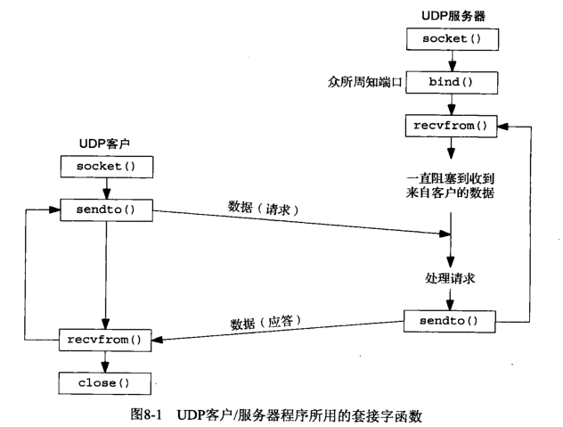
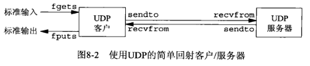
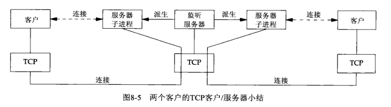
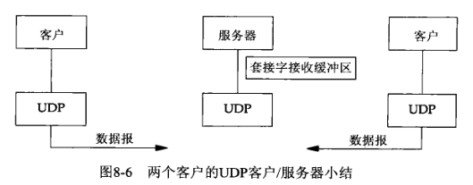
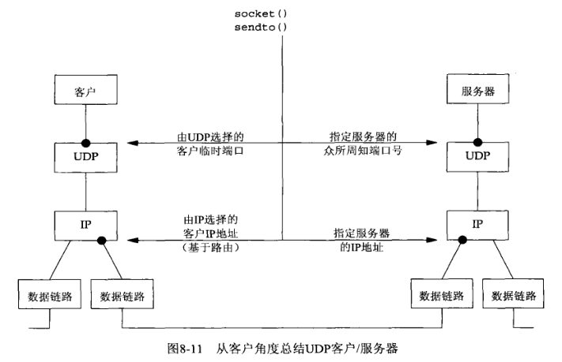
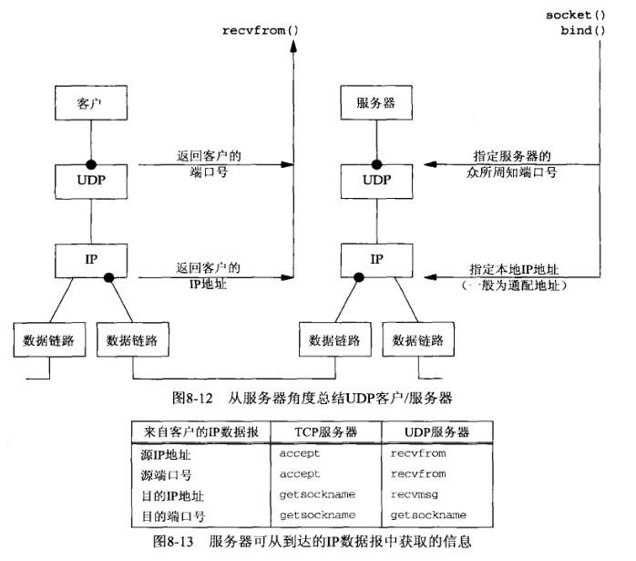
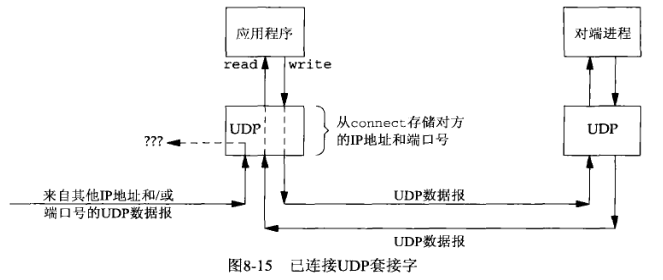
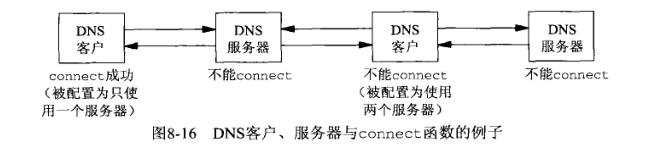

第8章 基本UDP套接字编程
8.1 概述
UDP是无连接不可靠的数据报协议，非常不同于TCP提供的面向连接的可靠字节流。
有些场合确实适合使用UDP，常见的应用程序有：
- DNS：域名系统
- NFS：网络文件系统
- SNMP：简单网络管理协议

8.2 recvfrom和sendto函数
类似于标准的read和write函数，不过需要三个额外的参数：
#include <sys/socket.h>
ssize_t recvfrom(int sockfd, void *buff, size_t nbytes, int flags,
struct sockadd *from, socklen_t *addrlen);
ssize_t sendto(int sockfd, void *buff, size_t nbytes, int flags,
const struct sockaddr *to, socklen_t addrlen);
|
前三个参数sockfd、buff和nbytes等同于read和write函数的三个参数：描述符、指向读入或写出缓冲区的指针和读写字节数。
flags总是置0
sendto的to参数指向一个含有数据报接收者的协议地址（例如IP地址及端口号）的套接字地址结构，大小由addrlen参数指定（是一个整数值）
recvfrom的from参数指向一个将由该函数在返回时填写数据报发送者的协议地址（例如IP地址及端口号）的套接字地址结构，该套接字地址中填写的字节数存放在addrlen参数所指的整数中返回给调用者（是一个指向整数值的指针（值-结果传参））
recvfrom最后两个参数类似accept最后两个参数：返回时其中套接字地址结构内容告诉我们是谁发送了数据报（UPD情况下）或是谁发起了连接（TCP情况下）。
sendto的最后两个参数类似于connect最后两个参数：调用时其中套接字地址结构被我们填入数据报发往（UDP情况下）或与之建立连接（TCP情况下）的协议地址
写一个长度为0的数据报是可行的。在UDP情况下，会形成一个只包含IP首部和UDP首部而没有数据的IP数据报，即recvfrom返回0值是可接受的。
UDP是无连接的，不存在关闭连接之类的事情。
8.3 UDP回射服务器程序：main函数

#include "unp.h"
int
main(int argc, char **argv)
{
int sockfd;
struct sockaddr_in servaddr, cliaddr;
sockfd = Socket(AF_INET, SOCK_DGRAM, 0);
bzero(&servaddr, sizeof(servaddr));
servaddr.sin_family = AF_INET;
servaddr.sin_addr.s_addr = htonl(INADDR_ANY);
servaddr.sin_port = htons(SERV_PORT);
Bind(sockfd, (SA *) &servaddr, sizeof(servaddr));
dg_echo(sockfd, (SA *) &cliaddr, sizeof(cliaddr));
}
|
8.4 UDP回收服务器程序：dg_echo函数
#include "unp.h"
void
dg_echo(int sockfd, SA *pcliaddr, socklen_t clilen)
{
int n;
socklen_t len;
char mesg[MAXLINE];
for ( ; ; ) {
len = clilen;
n = Recvfrom(sockfd, mesg, MAXLINE, 0, pcliaddr, &len);
Sendto(sockfd, mesg, n, 0, pcliaddr, len);
}
}
|
大多数TCP服务器是并发的，大多数UDP服务器是迭代的。每个UDP套接字都有一个接收缓冲区，到达该套接字的每个数据报都进入这个套接字接收缓冲区，当进程调用recvfrom函数时，缓冲区中的下一个数据报以FIFO顺序返回给进程。
dg_echo函数是协议无关的：调用者分配一个正确大小的套接字地址结构，将其地址指针和大小传参给dg_echo，dg_echo绝不查看该结构的内容，而是把一个指向该结构的指针传递给recvfrom和sendto。


8.5 UDP回射客户程序：main函数
#include "unp.h"
int
main(int argc, char **argv)
{
int sockfd;
struct sockaddr_in servaddr;
if (argc != 2)
err_quit("usage: udpcli <IPaddress>");
bzero(&servaddr, sizeof(servaddr));
servaddr.sin_family = AF_INET;
servaddr.sin_port = htons(SERV_PORT);
Inet_pton(AF_INET, argv[1], &servaddr.sin_addr);
sockfd = Socket(AF_INET, SOCK_DGRAM, 0);
dg_cli(stdin, sockfd, (SA *) &servaddr, sizeof(servaddr));
exit(0);
}
|
8.6 UDP回射客户程序：dg_cli函数
dg_cli函数也是协议无关的，不过main函数都是协议相关的。
#include "unp.h"
void
dg_cli(FILE *fp, int sockfd, const SA *pservaddr, socklen_t servlen)
{
int n;
char sendline[MAXLINE], recvline[MAXLINE + 1];
while (Fgets(sendline, MAXLINE, fp) != NULL) {
Sendto(sockfd, sendline, strlen(sendline), 0, pservaddr, servlen);
n = Recvfrom(sockfd, recvline, MAXLINE, 0, NULL, NULL);
recvline[n] = 0;
Fputs(recvline, stdout);
}
}
|
8.7 数据报的丢失
UDP客户/服务器例子是不可靠的：如果客户数据报到达服务器，但是服务器的应答丢失了，则客户将永远阻塞于dg_cli函数的recvfrom调用，等待一个永远不会到达的服务器应答。
防止永久阻塞的一般方法是给客户的recvfrom调用设置一个超时，但是这并不是完整的解决办法。
8.8 验证接收到的响应
知道客户临时端口的任何进程都可以往客户发送数据报，而这些数据报会与正常的服务器应答混杂。
通过在dg_cli函数的recvfrom调用中，通知内核返回数据报发送者的地址，通过比较recvfrom在值-结果传参中返回的长度，然后用memcmp比较套接字地址结构本身，验证接收到的响应。
#include "unp.h"
void
dg_cli(FILE *fp, int sockfd, const SA *pservaddr, socklen_t servlen)
{
int n;
char sendline[MAXLINE], recvline[MAXLINE + 1];
socklen_t len;
struct sockaddr *preply_addr;
preply_addr = Malloc(servlen);
while (Fgets(sendline, MAXLINE, fp) != NULL) {
Sendto(sockfd, sendline, strlen(sendline), 0, pservaddr, servlen);
len = servlen;
n = Recvfrom(sockfd, recvline, MAXLINE, 0, preply_addr, &len);
if (len != servlen || memcmp(pservaddr, preply_addr, len) != 0) {
printf("reply from %s (ignored)\n",
Sock_ntop(preply_addr, len));
continue;
}
recvline[n] = 0;
Fputs(recvline, stdout);
}
}
|
如果服务器运行在只有单个IP的主机上，那么新版的客户将正常工作，如果服务器主机是多宿的，该客户可能失败：发送到服务器数据的地址和接收服务器数据的地址可能不同。
解决办法：
- 将返回的IP地址通过DNS中查找服务器主机的名字来验证主机的域名
- 为服务器每个IP绑定一个套接字，在所有套接字上使用select，使应答的套接字上绑定的IP地址就是客户请求的目的IP地址
8.9 服务器进程未运行
服务器进程不启动的情况下，客户永远阻塞在它的recvfrom调用，等待一个永不出现的服务器应答：
- 客户主机进行ARP请求后获取服务器地址
- 客户发送数据后，返回“端口不可达”的ICMP消息，但该消息不会返回给客户进程
这个ICMP错误称为异步错误，该错误由sendto引起，但是sendto本身却成功返回。UDP输出操作成功后仅仅返回表示在接口输出队列中具有存放所形成IP数据报的空间，该ICMP错误直到后来才返回，故称其为异步。
一个基本的规则：对于一个UDP套接字，由它引起的异步错误却并不返回给它，除非它已连接。ICMP出错信息包含引起错误的数据报的IP首部和UDP首部，而recvfrom可以返回的信息只有errno值，没法返回出错数据报的目的IP地址和目的UDP端口号，因此做出决定：仅在进程已将其UDP套接字连接到恰恰一个对端后，这些异步错误才返回给进程。
只要SO_BSDCOMPAT套记者选项没有开启，Linux甚至对未连接的套接字也返回大多数ICMP “destination unreachable”错误。
8.10 UDP程序例子小结

- 客户临时端口是在第一次调用sendto时一次性选定，不能改变
- 客户的IP地址可以随客户发送的每个UDP数据报而变动

- 对于UDP套接字来是，目的IP地址只能通过为IPv4设置IP_RECVDSTADDR套接字选项（或为IPv6设置IPV6_PKTINFO套接字选项）然后调用recvmsg取得。
8.11 UDP的connect函数
UDP套接字的connect没有三路握手过程，内核只是检查是否存在立即可知的错误，记录对端的IP地址和端口号，然后立即返回到调用进程：
- 未连接UDP套接字，新创建的UDP套接字默认如此
- 已连接UDP套接字，对UDP套接字调用connect的结果
已连接UDP套接字对比默认的未连接套接字的三个变化：
不能给输出操作指定目的IP地址和端口号，而是改用write或send
- 不使用sendto
- 使用sendto，但是不能指定目的地址，sendto的第五个参数为空指针，第六个参数为0
POSIX规范指出当第五个参数是空指针时，第六个参数的取值就不再考虑
不必使用recvfrom以获悉数据报的发送者，而改用read、recv或recvmsg。限制一个已连接UDP套接字能且仅能与一个对端交换数据报。
- 准确说是仅能与一个IP地址交换数据报，可能connect到多播或广播地址
已连接UDP套接字的异步错误会返回给它们所在的进程，而未连接UDP套接字不接受任何异步错误


UDP客户进程或服务进程只在使用自己的UDP套接字与确定的唯一对端进行通信时，才可以调用connect，调用connect的通常是UDP客户，不过有些网络应用中的UDP服务器会与单个客户长时间通信（如TFTP），这种情况下，客户和服务器都可能调用connect。
8.11.1 给一个UDP套接字多次调用connect
一个已连接UDP套接字的进程可由下列两个目的再次调用connect：
- 指定新的IP地址和端口号
- 断开套接字
- 为了断开一个已连接UDP套接字，我们再次调用connect时把套接字地址结构的地址族成员（对于IPv4为sin_family，对于IPv6为sin6_family）设置为AF_UNSPEC，这样做可能会返回一个EAFNOSUPPORT错误，不过没关系
- 有些系统可以用空的套接字地址结构指针调用connect，POSIX规范和BSD手册只是提示必须使用一个空地址而没有提到出错返回值。最便于移植的解决办法是：清零一个地址结构后把它的地址族成员设置为AF_UNSPEC，再把它传递给connect
8.11.2 性能
在一个未连接UDP套接字上给两个数据报调用sendto函数涉及6个步骤（源自Berkeley内核）：
- 连接套接字（第一次很可能搜索路由表）
- 输出第一个数据报
- 断开套接字连接
- 连接套接字（第二次的目的地址可能等同第一次，则无需搜索路由表）
- 输出第二个数据报
- 断开套接字连接
当应用进程知道自己要给同一目的地址发送多个数据报时，显示连接套接字效率更高，调用connect后调用两次write涉及内核的执行步骤如下：
8.12 dg_cli函数（修订版）
#include "unp.h"
void
dg_cli(FILE *fp, int sockfd, const SA *pservaddr, socklen_t servlen)
{
int n;
char sendline[MAXLINE], recvline[MAXLINE + 1];
Connect(sockfd, (SA *) pservaddr, servlen);
while (Fgets(sendline, MAXLINE, fp) != NULL) {
Write(sockfd, sendline, strlen(sendline));
n = Read(sockfd, recvline, MAXLINE);
recvline[n] = 0;
Fputs(recvline, stdout);
}
}
|
函数不查看传递给connect的套接字地址结构的内容，仍是协议无关的。
8.13 UDP缺乏流量控制
UDP套接字接收缓冲区：由UDP给某个特定套接字排队的UDP数据报数目受限于该套接字接收缓冲区的大小，可以使用SO_RCVBUF套接字选项修改改制。
增加流量控制的UDP示例：
#include "unp.h"
#define NDG 2000
#define DGLEN 1400
void
dg_cli(FILE *fp, int sockfd, const SA *pservaddr, socklen_t servlen)
{
int i;
char sendline[DGLEN];
for (i = 0; i < NDG; i++) {
Sendto(sockfd, sendline, DGLEN, 0, pservaddr, servlen);
}
}
|
#include "unp.h"
static void recvfrom_int(int);
static int count;
void
dg_echo(int sockfd, SA *pcliaddr, socklen_t clilen)
{
int n;
socklen_t len;
char mesg[MAXLINE];
Signal(SIGINT, recvfrom_int);
n = 220 * 1024;
Setsockopt(sockfd, SOL_SOCKET, SO_RCVBUF, &n, sizeof(n));
for ( ; ; ) {
len = clilen;
Recvfrom(sockfd, mesg, MAXLINE, 0, pcliaddr, &len);
count++;
}
}
static void
recvfrom_int(int signo)
{
printf("\nreceived %d datagrams\n", count);
exit(0);
}
|
8.14 udp中的外出接口的确定
已连接UDP套接字还可以用来确定用于某个特定目的地址的外出接口。因为connect函数应用到UDP套接字时有一个副作用：内核选择本地IP地址（未使用bind），这个本地IP地址通过为目的地址搜索路由表得到外出接口，然后选用该接口的主IP地址而选定。
在UDP套接字上调用connect并不给对端主机发送任何信息，它完全是一个本地操作，只是保存对端的IP地址和端口号。
在一个未绑定端口号的UDP套接字上调用connect同时也给该套接字指派一个临时端口。
#include "unp.h"
int
main(int argc, char **argv)
{
int sockfd;
socklen_t len;
struct sockaddr_in cliaddr, servaddr;
if (argc != 2)
err_quit("usage: udpcli <IPaddress>");
sockfd = Socket(AF_INET, SOCK_DGRAM, 0);
bzero(&servaddr, sizeof(servaddr));
servaddr.sin_family = AF_INET;
servaddr.sin_port = htons(SERV_PORT);
Inet_pton(AF_INET, argv[1], &servaddr.sin_addr);
Connect(sockfd, (SA *) &servaddr, sizeof(servaddr));
len = sizeof(cliaddr);
Getsockname(sockfd, (SA *) &cliaddr, &len);
printf("local address %s\n", Sock_ntop((SA *) &cliaddr, len));
exit(0);
}
|
8.15 使用select函数的tcp和udp回射服务器程序
将并发TCP回射服务器程序与迭代UDP回射服务器程序组合成单个使用select来复用TCP和UDP套接字的服务器程序。
#include "unp.h"
int
main(int argc, char **argv)
{
int listenfd, connfd, udpfd, nready, maxfdp1;
char mesg[MAXLINE];
pid_t childpid;
fd_set rset;
ssize_t n;
socklen_t len;
const int on = 1;
struct sockaddr_in cliaddr, servaddr;
void sig_chld(int);
listenfd = Socket(AF_INET, SOCK_STREAM, 0);
bzero(&servaddr, sizeof(servaddr));
servaddr.sin_family = AF_INET;
servaddr.sin_addr.s_addr = htonl(INADDR_ANY);
servaddr.sin_port = htons(SERV_PORT);
Setsockopt(listenfd, SOL_SOCKET, SO_REUSEADDR, &on, sizeof(on));
Bind(listenfd, (SA *) &servaddr, sizeof(servaddr));
Listen(listenfd, LISTENQ);
udpfd = Socket(AF_INET, SOCK_DGRAM, 0);
bzero(&servaddr, sizeof(servaddr));
servaddr.sin_family = AF_INET;
servaddr.sin_addr.s_addr = htonl(INADDR_ANY);
servaddr.sin_port = htons(SERV_PORT);
Bind(udpfd, (SA *) &servaddr, sizeof(servaddr));
Signal(SIGCHLD, sig_chld);
FD_ZERO(&rset);
maxfdp1 = max(listenfd, udpfd) + 1;
for ( ; ; ) {
FD_SET(listenfd, &rset);
FD_SET(udpfd, &rset);
if ( (nready = select(maxfdp1, &rset, NULL, NULL, NULL)) < 0) {
if (errno == EINTR)
continue;
else
err_sys("select error");
}
if (FD_ISSET(listenfd, &rset)) {
len = sizeof(cliaddr);
connfd = Accept(listenfd, (SA *) &cliaddr, &len);
if ( (childpid = Fork()) == 0) {
Close(listenfd);
str_echo(connfd);
exit(0);
}
Close(connfd);
}
if (FD_ISSET(udpfd, &rset)) {
len = sizeof(cliaddr);
n = Recvfrom(udpfd, mesg, MAXLINE, 0, (SA *) &cliaddr, &len);
Sendto(udpfd, mesg, n, 0, (SA *) &cliaddr, len);
}
}
}
|